We’re a neighborhood bakery born from a simple belief: that real bread, honest pastry, and genuine warmth can turn an ordinary morning into something extraordinary.
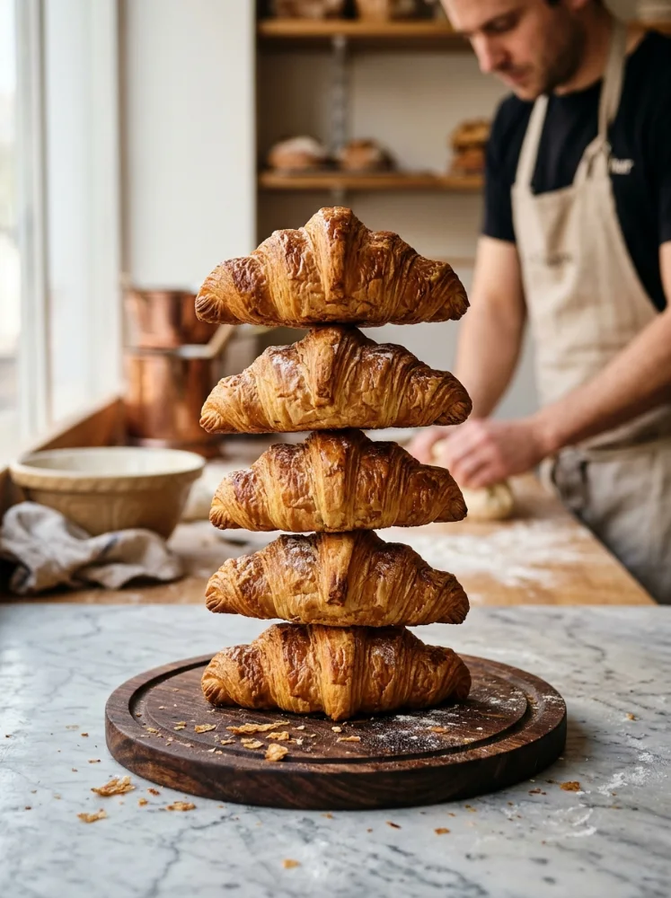
Hand-rolled butter croissants, fresh from the oven at 7:00 AM.
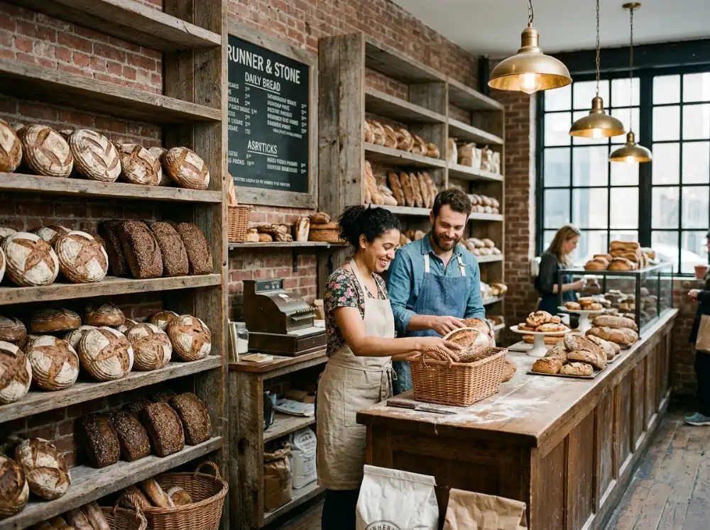
Stackly started in 2018 with a single stone deck oven, twenty sacks of organic heritage flour, and an unwavering obsession with slow fermentation.
We wanted to create a bakery that felt like a natural extension of home—where flour dust dances in morning sunbeams, where neighbors know each other by name, and where every loaf has an honest soul.
Meet our craft team • Elena, Julian & makersOpened our doors on Berry Street with one stone deck oven and lines wrapping around the block before dawn.
Cultured our signature 100% rye sourdough starter, fed twice daily in a humidity-controlled cedar room.
Transitioned 100% of our flours to direct-trade partnerships with regenerative grain growers across New York.
Expanding to two fresh daily deck pulls at 7:00 AM and 2:00 PM, serving over 1,200 neighborhood club members.
True artisan baking is an act of devotion. Meet the founders, sourdough alchemists, and pastry perfectionists behind every single bake.
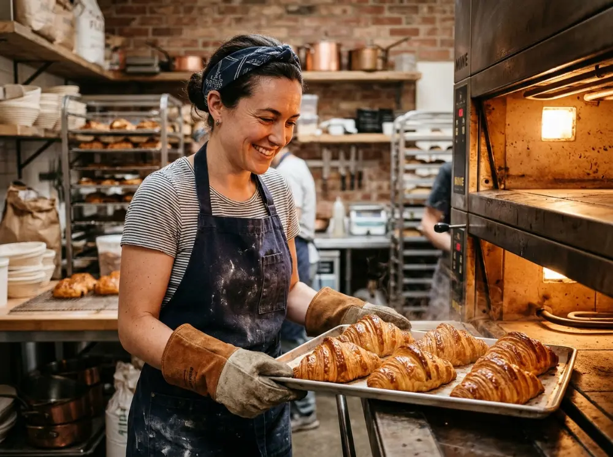
Stone Deck LeadApprenticed in Lyon and the French Basque country before constructing our Williamsburg stone hearths.
“Bread is alive. You don't master it—you learn to listen to its rhythm.”
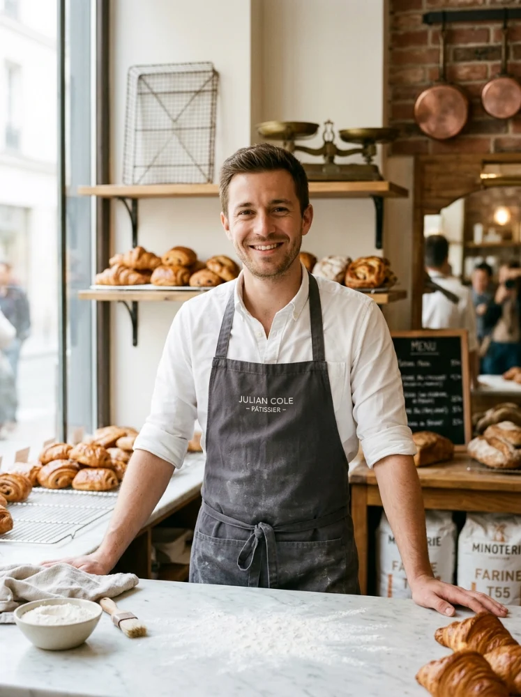
Viennoiserie MasterGraduate of Ferrandi Paris. Spent a decade perfecting 81-layer croissant lamination and browned-butter crumb.
“Lamination is precision geometry made edible. 81 layers of butter and steam.”
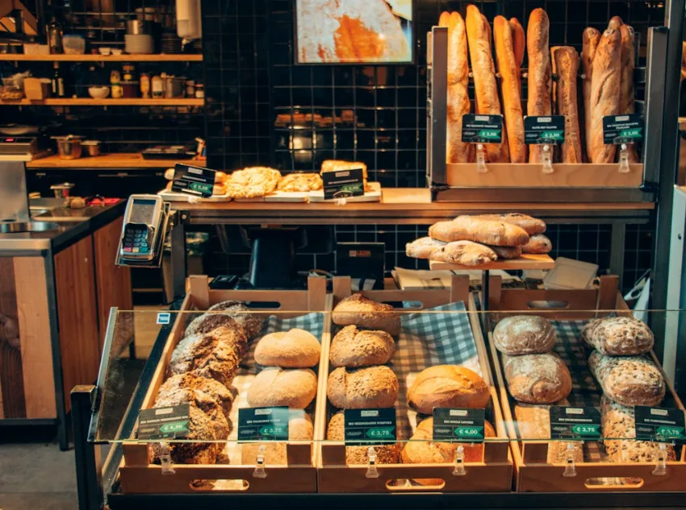
Seasonal PatisserieCurates our seasonal fruit galettes, folding stone fruits and wild Hudson Valley berries into crisp rough-puff pastry.
“Nature dictates our bakes. When apricots peak, we fold them into pastry.”
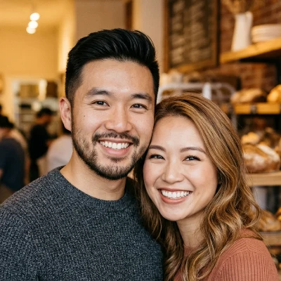
Hospitality • CoffeePairing our warm oven bakes with single-origin pour-overs roasted specifically to balance sourdough acidity.
“A quiet pastry pause is the simplest, most grounding luxury in New York.”
No industrial speed racks or dough conditioners. Every single loaf spends three full days transforming under the baker's care.
Fed twice daily with organic stoneground rye flour and natural spring water, our wild starter 'Flora' develops deep lactic complexity.
Dough rests at 4°C in cedar proofing chillers. Enzymes break starches down into digestible sugars, eliminating the need for preservatives.
Normandy cultured butter blocks are hand-folded and turned three times on chilled marble tables to create exactly 81 crisp layers.
Loaded on 500°F refractory stone hearth decks with high-pressure steam pulses for a blistered golden ear and glass-shatter crust.
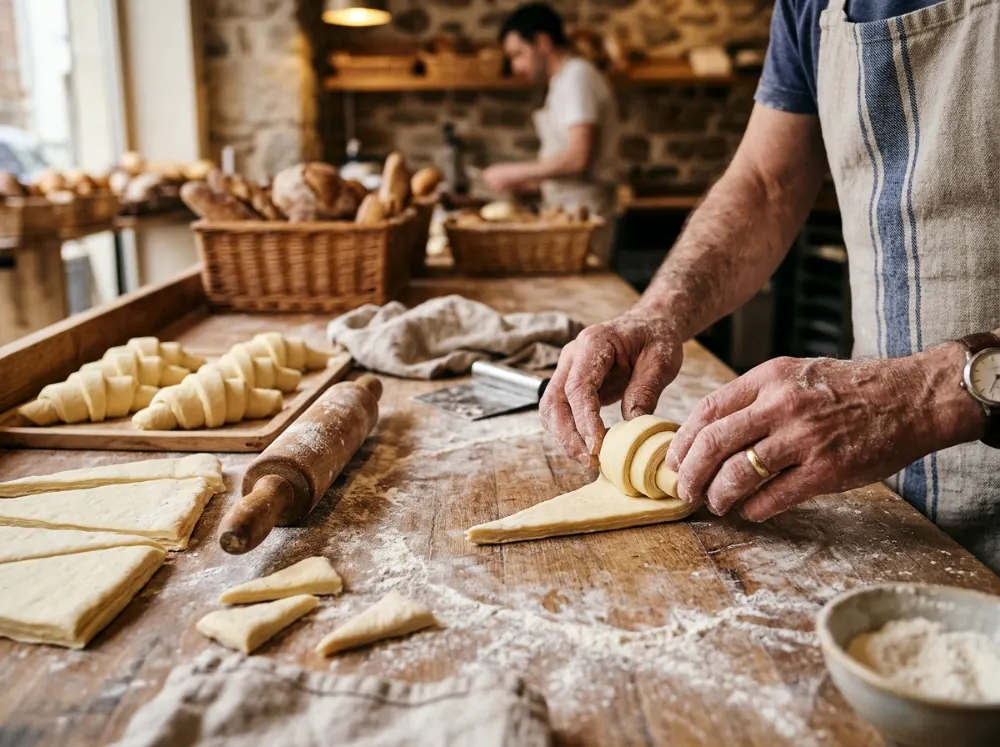
We refuse shortcuts. No commercial dough conditioners, no artificial flavorings, and no rushed proofs. We source wild, unbleached flours from regenerative New York state grain growers and cultured churned butter from family farms in Normandy.
“True craftsmanship is doing things the right way even when nobody is watching.”
Four elements: flour, water, salt, and wild levain starter. No additives, bleaching agents, or commercial conditioners, ever.
Up to 72 hours of cold fermentation allows complex sugars to bloom naturally into deep, digestible flavor and wild open crumb.
Every single loaf, tart, and pastry is hand-shaped and pulled warm from our stone hearth decks before dawn and again at 2:00 PM.
Freshly pulled from stone deck hearths every morning at 7:00 AM and 2:00 PM.
Explore Our Full Menu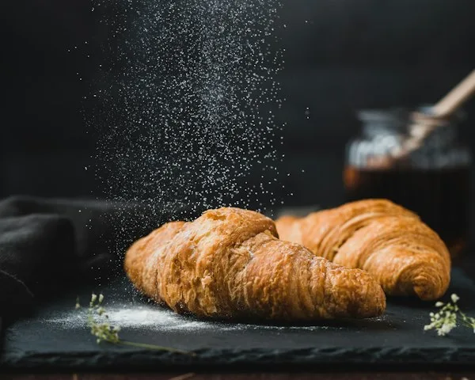
Normandy cultured butter, flaky honeycomb layers.
$4.75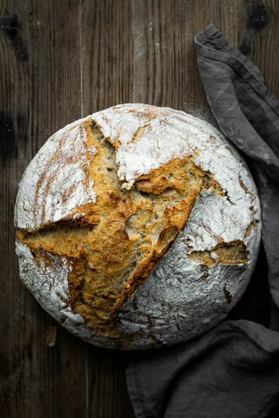
72-hr wild levain, blistered ear, open airy crumb.
$8.50
Ceylon cinnamon, brown butter glaze, cardamom.
$5.25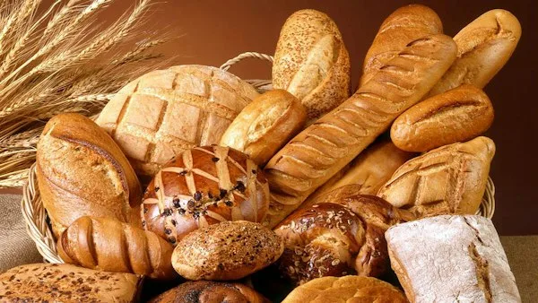
Twin batons of 70% Valrhona dark chocolate.
$5.25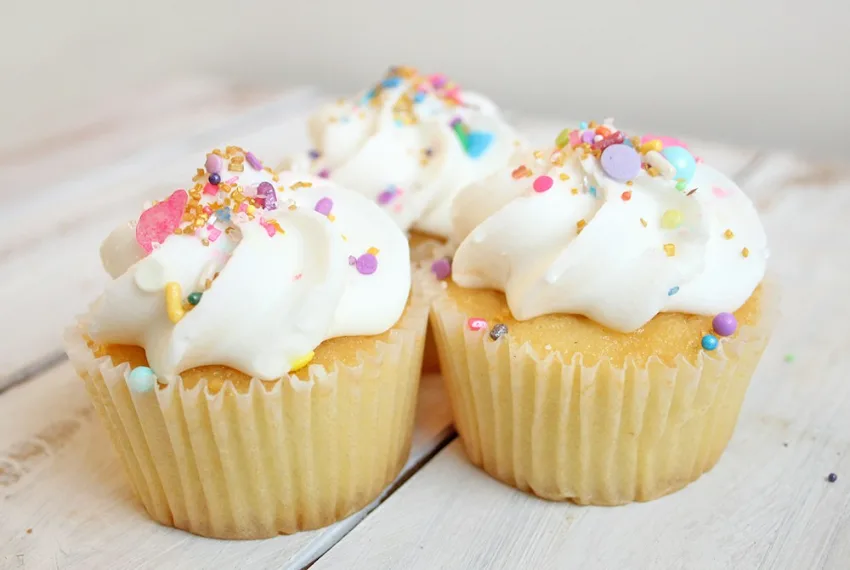
Wild raspberries, almond frangipane, crisp shell.
$6.50A bakery should nourish not just stomachs, but the community it calls home. Here is our daily promise to Williamsburg.
We never throw bread away. Every evening at 5:00 PM, all unsold day-fresh hearth loaves are packed and delivered directly to North Brooklyn community food pantries.
From unbleached FSC-certified kraft pastry sleeves to plant-cellulose cake liners and water-based vegetable inks, every package you carry home breaks down naturally.
Each year, we sponsor four young aspiring bakers from underserved NYC neighborhoods with fully paid 6-month apprenticeships in sourdough science and viennoiserie.

Whether you’re swinging by for your morning sourdough boule before work or staying for an afternoon pastry and pour-over, our doors are open.